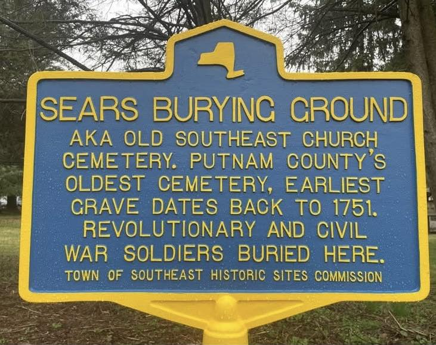
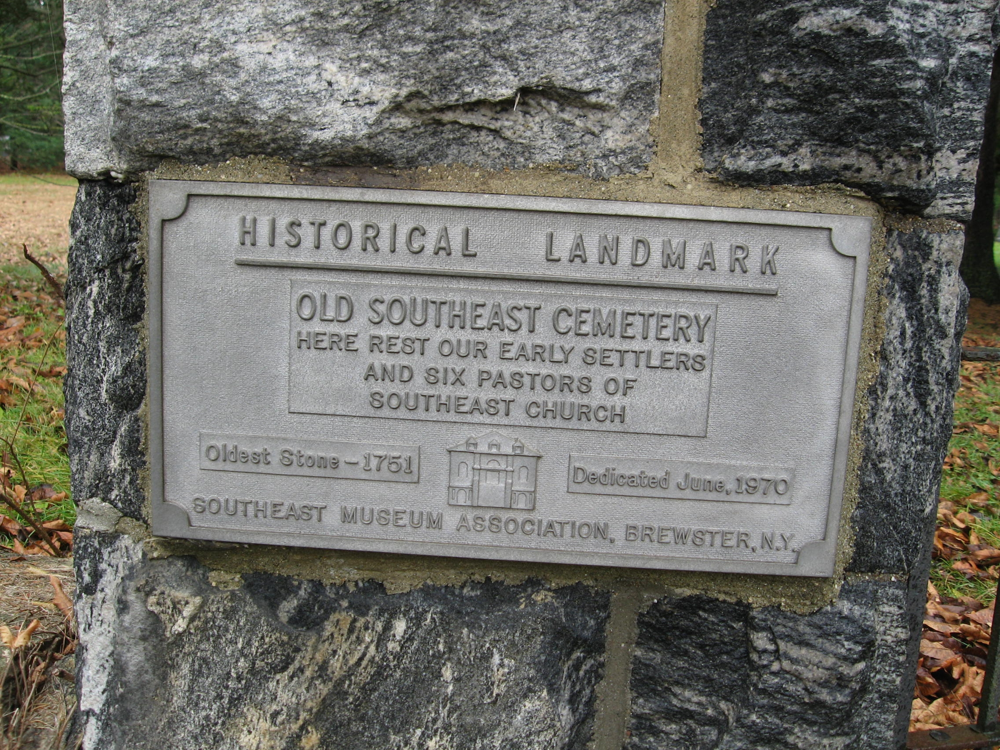

Sears Burying Ground
Also called the Old Southeast Church Cemetery, the Doansburg Burying Ground, or simply Doanes Cemetery — Putnam County’s oldest cemetery, anchored to a 1751 grave and to the first congregation of the Old Southeast Church.


SEARS BURYING GROUND
Aka Old Southeast Church Cemetery. Putnam County’s oldest cemetery, earliest grave dates back to 1751. Revolutionary and Civil War soldiers buried here.
HISTORICAL LANDMARK
OLD SOUTHEAST CEMETERY
Here rest our early settlers
and six pastors of Southeast Church
Oldest Stone — 1751
Dedicated June, 1970
About this Marker
This small burying ground on the west side of Route 22 in the Brewster Hill section of the Town of Southeast holds the oldest marked grave in Putnam County. It has been known by at least four names over the course of its long life: Sears Burying Ground (after the family whose land it sat on), Old Southeast Church Cemetery (after the congregation that buried its dead here), Doansburg Burying Ground (after the hamlet of Doansburg, which surrounded it in the eighteenth century), and simply Doanes Cemetery. Two markers stand at its entrance today. The newer one — the standard New York State blue-and-yellow roadside design — was erected by the Town of Southeast Historic Sites Commission and unveiled on April 27, 2024. The older one — a cast metal plaque mounted on a rough stone pillar — was placed by the Southeast Museum Association in June 1970.
The 1751 grave: Abigail Moss Kent
The earliest marked stone here belongs to Abigail Moss Kent, who died in January 1751 at the age of thirty-three. Her husband, the Rev. Elisha Kent, was the founding pastor of the Southeast Presbyterian Church — the congregation that gave the cemetery its alternate name. Kent had come to the Philipse Patent in the 1740s as a missionary preacher and would minister here until his death in 1776, at the start of the Revolution. Abigail’s grave, dating to the very first decade of organized European settlement in this part of Dutchess County (Putnam was not split off as a separate county until 1812), is the anchor that lets the Town of Southeast call this Putnam County’s oldest cemetery. The plaque’s memorial to “six pastors of Southeast Church” suggests that Elisha Kent and five of his successors are buried somewhere on these grounds, though we have not yet matched all six names to surviving stones.
Early settler family names
The cemetery’s monuments carry many of the names of the families who settled this corner of the Philipse Patent in the mid-eighteenth century: Barnum, Crane, Crosby, Kent, and the Sears who gave the ground its everyday name. Several of these surnames recur throughout the project’s wider research record — the Crosby family lines connect (variously by collateral relation or by neighborhood) to Enoch Crosby, the Revolutionary War spy who lived just east of here and is buried at Gilead Cemetery in Carmel, and the Crane and Barnum names appear repeatedly in the deeds and census records of Southeast Centre and the adjoining hamlets.
Among the Revolutionary War veterans interred here, the press coverage of the 2024 marker unveiling singled out Capt. Jedidiah Wood, who is remembered in local tradition for helping carry wounded American soldiers along a trail through what is now Brewster village to a field hospital in Danbury during one of the British raids on the Hudson Valley in 1777. Recent work by the cemetery’s caretakers has reunited the long-separated headstones of Captain Wood and his wife, Abigail, on the cemetery grounds.
The hamlet of Doansburg
The names “Doansburg Burying Ground” and “Doanes Cemetery” preserve a piece of Southeast geography that has nearly disappeared from everyday speech. Doansburg was the eighteenth- and early-nineteenth-century name for the cluster of farms and crossroads on Route 22 in this section of Southeast — surrounding what is now Brewster Hill. The name occasionally still surfaces on old deeds, in nineteenth-century newspaper accounts, and on the New York State historic marker (number 28 on the Putnam County list) commemorating Chancellor James Kent — one of Elisha Kent’s descendants, the Chief Justice of New York and author of the canonical four-volume Commentaries on American Law — whose marker stands “on NYS 22 at Doansburg.”
The two markers
The 1970 plaque is the older of the two memorials and the more lapidary — a single cast metal panel mounted to a stone pillar, naming the cemetery, identifying its oldest stone, and dating its own dedication. The Southeast Museum Association placed it as part of a wider effort in that period to identify and preserve the founding sites of the Town of Southeast. Among the plaque’s details is a small relief image of what is almost certainly the Old Southeast Church meeting house: a simple two-story building with a gabled roof and arched windows, an architectural shorthand for the congregation whose burials these are.
The 2024 New York State-style marker is the newer addition and serves a different purpose: it places the cemetery in the catalog of roadside historic markers that anyone driving Route 22 can recognize and stop at. The unveiling ceremony on April 27, 2024 was organized jointly by the Town of Southeast and its Historic Sites Commission. With its placement, the Sears Burying Ground joined the small but growing roster of officially marked Southeast sites — the Chancellor Kent marker at Doansburg, the Fowler House marker on Old North Road, the Southeast Centre marker on Doansburg Road, and others — that together constitute Southeast’s catalog of public memory.
Brewster Hill section,
Town of Southeast, NY
−73.577998° W
Sources
- On-site photographs of the 2024 Town of Southeast Historic Sites Commission marker and the 1970 Southeast Museum Association plaque.
- “Sears Burying Ground to Get Historic Marker,” Putnam Press Times, April 17, 2024 — primary source for the April 27, 2024 unveiling ceremony, the sponsor identification (Town of Southeast and its Historic Sites Commission), the 1751 grave of Abigail Moss Kent, the roster of family names interred at the cemetery (Barnum, Crane, Crosby, Kent), and the local tradition of Capt. Jedidiah Wood’s wartime service.
- Old Southeast Church Cemetery, Find a Grave memorial #2198375 — identification of the cemetery’s alternate names (Sears Burying Ground, Doanesburg Burying Ground) and confirmation of the 1601 Route 22 address.
- “Sears Burying Ground,” PutnamGraveyards.com (Southeast Historic Cemeteries series) — secondary catalog of the cemetery’s alternate names (Old Southeast Cemetery, Doanes Cemetery) and its status as a privately maintained burial ground.
- List of New York State Historic Markers in Putnam County, New York — Wikipedia, for the placement of the Chancellor Kent marker at Doansburg and the broader catalog of Town of Southeast historic markers.
- Historiography of the Rev. Elisha Kent and the Southeast Presbyterian Church congregation, drawing on the general nineteenth- and twentieth-century accounts of the Philipse Patent settlement (Pelletreau 1886, Blake 1849, Zimm 1946); specific stones and pastoral identifications have not been individually verified for this page.